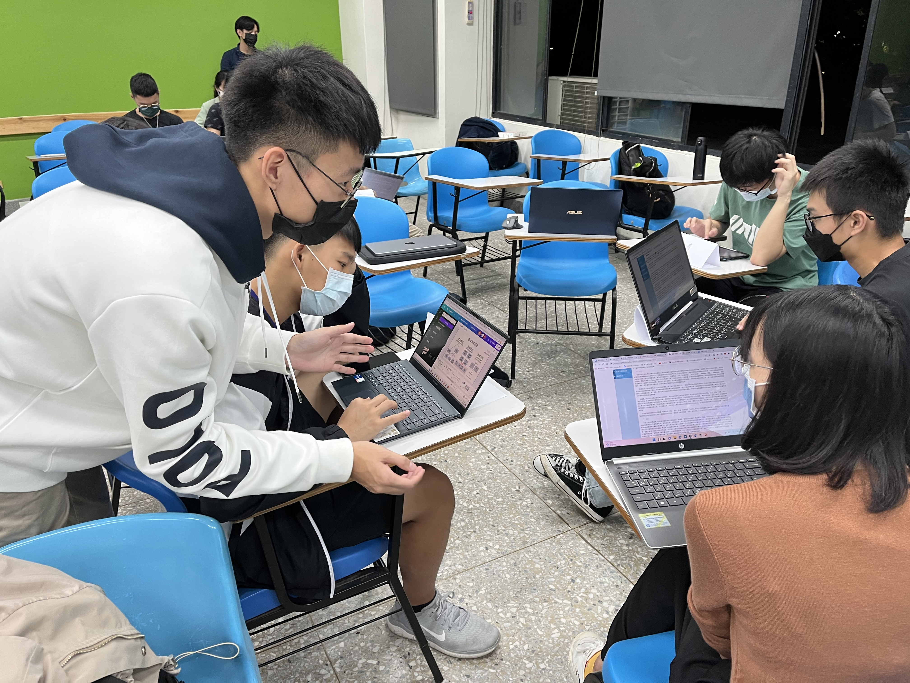
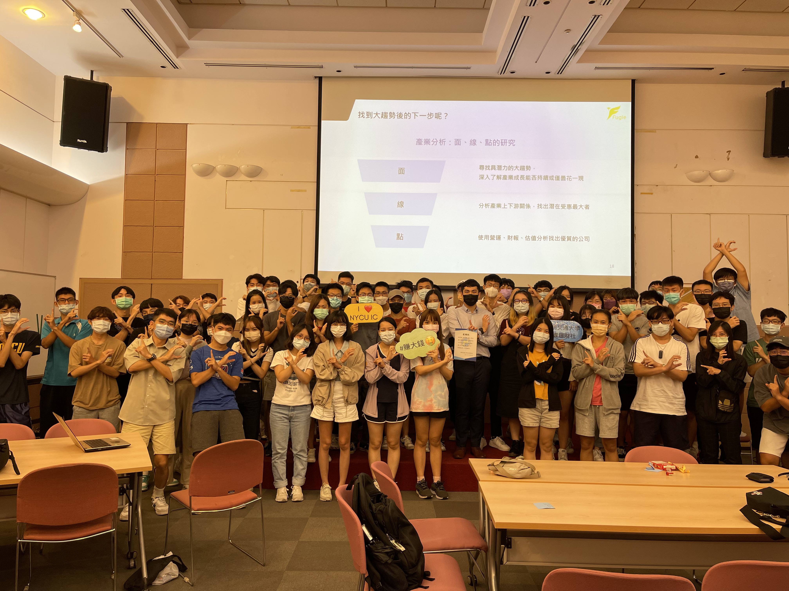
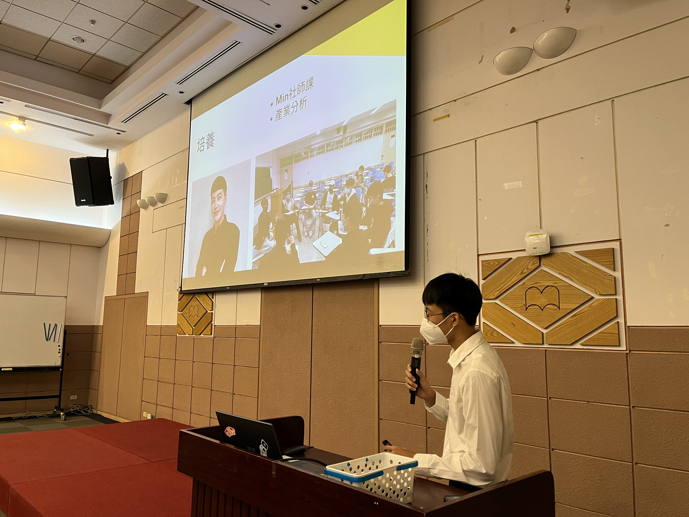
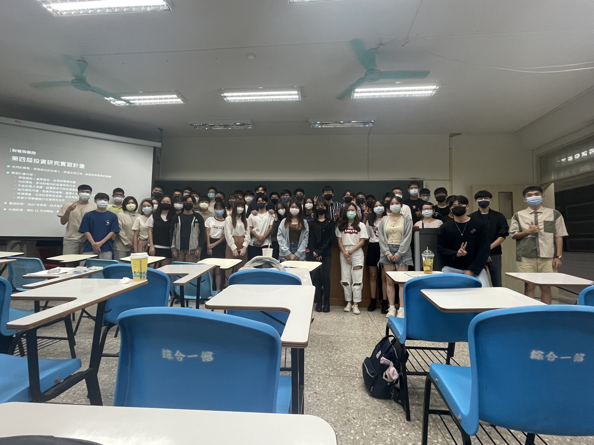
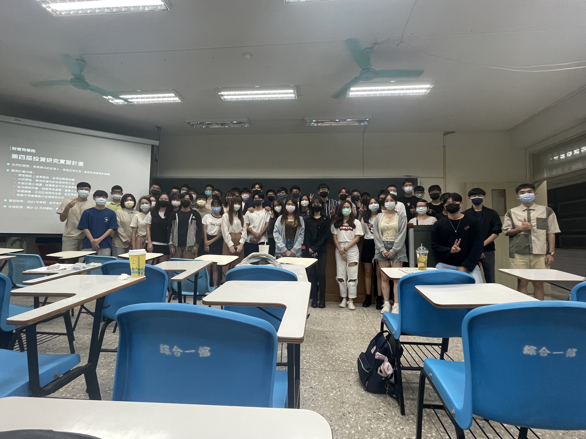

-
2022-2023 擔任投資理財社社長
管理10人以上的幹部團隊，經營接近百人的社團，因爲還是一個很新的社團， 有許多團隊的制度與規範都還尚未成熟，擔任社長後建立許多新的制度讓社團運作更加有效率。
 Image Description 1 Image Description 2 Image Description 3 Image Description 4
 Image Description 5
Image Description 4
 Image Description 5 -
2022-2023 擔任系排隊長
平時熱愛打排球，打球是我的一個紓壓管道，但因為上一屆系排經營不善， 面臨差點解散的風險，我一肩扛起重任，全部打掉重練，開始建立起團隊的紀律與向心力。
-
2023-2024 交大量化讀書會創辦人
結合交大資訊方面的人才與投資理財社的業界資源，讓對量化交易有興趣的人有一個學習的管道與討論的空間 ，彌補學校這方面不足的課程。